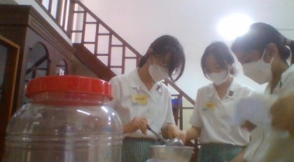

Setelah menyiapkan bahan dan alat yang diperlukan, peneliti melelehkan gula aren sesuai dengan takaran. Sambil menunggu proses gula aren meleleh, peneliti menuangkan air beras ke dalam toples plastik yang digunakan sebagai wadah pembuatan eco-enzyme buah ini.
Melelehkan gula aren
Mengaduk gula aren

Menuangkan air beras ke dalam toples plastik
Gula aren yang sudah mencair kemudian dituangkan ke dalam toples plastik yang sudah berisi air beras. Selanjutnya, peneliti mengaduk larutan secara terus menerus.
Setelah seluruh larutan cairan tercampur, peneliti segera memasukkan sampah-sampah organik yang telah ditentukan, yaitu kulit jeruk dan mangga, ke dalam toples plastik. Lalu, bahan-bahan yang sudah tercampur di dalam toples diaduk.
Memasukkan kulit jeruk dan mangga
Hasil akhir setelah seluruh bahan dicampurkan
Pada hakikatnya, eco-enzyme disimpan dalam kurun waktu 3 bulan untuk mendapatkan hasil yang maksimal. Selama proses 3 bulan tersebut, peneliti harus memeriksa dan melihat perkembangan yang terjadi pada eco-enzyme. Peneliti melakukan proses tersebut bersamaan dengan melakukan pengadukan 2 minggu sekali pada eco-enzyme, agar mendapatkan hasil semaksimal mungkin. Perlu diketahui juga bahwa wadah eco-enzyme harus sesekali dibuka untuk menghindari kemungkinan meledak akibat gas yang menumpuk. Berikut adalah foto eco-enzyme pada waktu 2 minggu setelah pembuatan, yaitu pada tanggal 11 November 2022:
Kondisi eco-enzyme buah sebagai berikut:
- Mulai tumbuh jamur di atas permukaan eco-enzyme
- Aroma segar
- Beberapa buah mulai membusuk/menghitam
- Dinding wadah terlihat lembab dan berair